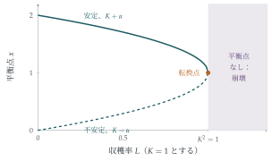

STEP II 1995、第8問
先に進む前に問題を読んでおこう。問題は STEP Support Programme の問題データベースにある： step.maths.org/questions/95-s2-q8
導入
食料が無制限にある個体群は指数関数的に（exponentially）増加する。しかし現実の個体群はやがて場所が足りなくなる。個体数が環境の支えうる上限、すなわち環境収容力（carrying capacity）に近づくにつれて、増加は鈍っていく。これを表す最も単純なモデルがロジスティック方程式（logistic equation）であり、問題の前半で扱われる。この方程式は、シャーレの中の細菌から新しい技術の普及に至るまで、あらゆるものを記述する。
問題の後半は、実用上きわめて重大な問いを投げかける。個体群を一定の割合で収穫（harvesting）し続けると何が起こるだろうか。ある閾値より下であれば、個体群は新しい、より低い平衡点（equilibrium）に落ち着く。しかし収穫をその閾値を超えて増やすと、たとえわずかであっても平衡点は消え、個体数はゼロへと崩壊する。これが漁業資源の崩壊の背後にある数学であり、漁獲枠が存在する理由である。
取りかかる前に
何かを解く前に、増加率 \((2K - x)x\) を \(x\) の関数としてグラフに描いてみよう。それはどこでゼロになるか。どこで正になるか。そこから \(x\) がどのように振る舞うかについて何がわかるか。
増加率は \(x = 0\) と \(x = 2K\) でゼロとなり、その間では正、\(2K\) より先では負である。したがって、\(0\) と \(2K\) の間から出発した個体群は \(2K\) に向かって増加し、\(2K\) より上から出発した個体群はそこへ向かって減少する。環境収容力は \(2K\) であり、増加が最も速いのは \(x = K\) のときで、そのときの増加率は \(K^2\) である。方程式を解かなくても、長期的な振る舞いを予測できるのである。
順を追って解く
段階 1 ロジスティック方程式を解く
変数分離（separation of variables）を行うと \(\displaystyle\int \frac{\mathrm{d}x}{(2K - x)x} = \int \mathrm{d}t\) となる。左辺を部分分数（partial fractions）に分解せよ。
\(\dfrac{1}{(2K - x)x} = \dfrac{1}{2K}\left(\dfrac1x + \dfrac{1}{2K - x}\right)\) であるから、 \[\frac{1}{2K}\ln\frac{x}{2K - x} = t + C.\] \(t = 0\) のとき \(x = K\) であるから、\(\ln 1 = 0\) より \(C = 0\) である。すると \(\frac{x}{2K - x} = e^{2Kt}\) となり、 \[x = \frac{2Ke^{2Kt}}{1 + e^{2Kt}} = \frac{2K}{1 + e^{-2Kt}} = K + K\frac{1 - e^{-2Kt}}{1 + e^{-2Kt}}. \qed\] を得る。この分数は \(\tanh(Kt)\) であるから、\(x = K + K\tanh Kt\) となる。これは \(K\) から \(2K\) へ向かって上昇する S 字形の曲線である。\(t \to \infty\) のとき \(e^{-2Kt} \to 0\) であり、\(x \to 2K\) となる。
段階 2 収穫
細菌を割合 \(L\) で取り除くと、 \[\frac{\mathrm{d}x}{\mathrm{d}t} = (2K - x)x - L.\] となる。
\((2K - x)x - L\) を平方完成せよ。その零点はどこにあるか。
\((2K - x)x - L = K^2 - L - (x - K)^2 = \alpha^2 - (x - K)^2 = \bigl(\alpha - (x - K)\bigr)\bigl(\alpha + (x - K)\bigr)\) である。平衡点は \(x = K \pm \alpha\) である。
ここで \(y = x - K + \alpha\) と置換しよう。\(y\) はどのような方程式を満たすか。もとのロジスティック方程式と比べてみよ。
\(y = x - K + \alpha\) とすると \(x - K = y - \alpha\) であるから、\(\alpha + (x - K) = y\) かつ \(\alpha - (x - K) = 2\alpha - y\) である。よって \[\frac{\mathrm{d}y}{\mathrm{d}t} = (2\alpha - y)y,\] となり、これは \(K\) を \(\alpha\) に置き換えた、再びロジスティック方程式である。初期値は \(y(0) = K - K + \alpha = \alpha\) であり、前半の \(x(0) = K\) とまったく同じ形をしている。したがって段階 1 により（\(K\) を \(\alpha\) に置き換えて）\(y(t) = \alpha + \alpha\tanh\alpha t \to 2\alpha\) となり、ゆえに \[x(t) = K + \alpha\tanh\alpha t \to K + \alpha. \qed\]
振り返り
まず定性的に考える。増加率の符号から、何も解かないうちに長期的な振る舞いが予測できた。
平方完成によって平衡点が明らかになる。収穫のある方程式の平衡点は \(K \pm \alpha\) であった。
置換によって新しい問題を既知の問題に帰着させる。変数をずらすことで、収穫のある方程式は、すでに解いたロジスティック方程式に変わった。
背後にある数学
収穫のある方程式には \(K + \alpha\) と \(K - \alpha\) の二つの平衡点がある。上の平衡点は安定（stable）である。すなわち、それよりわずかに上または下にある個体群はそこへ戻っていく。下の平衡点は不安定（unstable）である。すなわち、\(K - \alpha\) をわずかに下回る個体群は減少して絶滅に至る。収穫率 \(L\) が増加すると \(\alpha = \sqrt{K^2 - L}\) は小さくなり、二つの平衡点は互いに近づく。\(L = K^2\) で両者は一つに合わさり、\(L > K^2\) では平衡点はまったく存在せず、どのような個体群も崩壊する（図 8.3.1）。これはサドル・ノード分岐（saddle-node bifurcation）と呼ばれ、最も単純な種類の転換点である。その厄介な点は、何の劇的な前兆もないことである。\(L\) が \(K^2\) に近づいても平衡個体数はゆるやかに減少するだけであり、そして突然、平衡点が存在しなくなる。その後で収穫を減らしても役に立たないかもしれない。個体数がすでに不安定な閾値を下回っている可能性があるからである。

最大持続生産量
個体群が持ちこたえられる最大の収穫はどれだけだろうか。それは \(L = K^2\)、すなわち増加率 \((2K - x)x\) の最大値であり、個体数を環境収容力の半分である \(K\) に保つときに達成される。水産科学は20世紀半ばに、この「最大持続生産量」（maximum sustainable yield）を資源管理の目標として採用した。しかし、ちょうど最大値で収穫するということは、系をちょうど転換点に置くということであり、そこでは \(K\) をほんのわずか過大に見積もったり、不漁の年が一度あったりするだけで崩壊が起こる。ニューファンドランド（Newfoundland）沖のグランドバンクス（Grand Banks）のタラ漁場は、500年にわたって世界有数の豊かな漁場であったが、1990年代初めに崩壊した。1992年、カナダ政府は禁漁措置を導入し、数万人が職を失った。資源は今なお完全には回復していない。
他の場面でのロジスティック成長
ロジスティック方程式は、1838年にフェルフルスト（Pierre-François Verhulst）が人口のモデルとして提案したものである。同じ S 字形の曲線は、感染症の初期段階での広がり、新技術の普及、自己触媒的な化学反応、腫瘍の成長などを記述する。その離散時間版であるロジスティック写像（logistic map）はまったく異なる振る舞いを示し、カオス的（chaotic）になりうる。これについては 第 8.7 節 で見ることにする。
思考のスキル
方程式 \(x' = f(x)\) について、平衡点は \(f\) の零点であり、それらの間での \(f\) の符号から解がどちらへ動くかがわかる。
\(f\) が正から負へ変わる平衡点は安定であり、負から正へ変わる平衡点は不安定である。\(f\) のグラフを描くだけで、何も解かずに重要な問いに答えられることが多い。
次の一歩
低い値から出発する。収穫があり \(K^2 > L\) のとき、\(x(0) < K - \alpha\) ならば個体数は有限時間でゼロに達することを示せ。（ヒント：\(y(0) < 0\) のとき \(y\) はどう振る舞うか。）
過剰収穫。\(L > K^2\) のとき、\(\beta = \sqrt{L - K^2}\) とおく。\(x(0) = 2K\) のもとで \(x' = -(x - K)^2 - \beta^2\) を解き、個体数がゼロに達する時刻を求めよ。
比例収穫。代わりに、個体群の一定の割合を取り除くとする：\(x' = (2K - x)x - hx\)。平衡点を求め、すべての \(h < 2K\) に対して個体群が存続することを示せ。この方策はなぜより安全なのか。
到達時刻。収穫のない場合に、個体数が \(\frac32K\) に達する時刻を求めよ。
さらに学ぶために
Steven Strogatz, Nonlinear Dynamics and Chaos（CRC Press）。『非線形力学とカオス』。第 3 章は分岐を扱っており、この収穫モデルが演習問題として取り上げられている。
Nicholas Britton, Essential Mathematical Biology（Springer）。『数理生物学の基礎』。学部生向けの個体群モデル。
Mark Kurlansky, Cod: A Biography of the Fish That Changed the World（Penguin）。『タラ：世界を変えた魚の歴史』。タラ漁業とその崩壊の歴史。